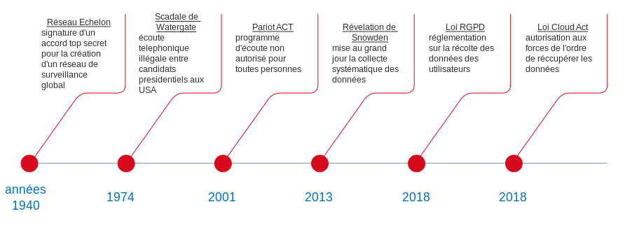

L'histoire et la chronologie des évenements.
Frise chronologique indiquants les principaux évenements :
Détail des differents évenements :
Réseau Echelon, Fin des années 1940 :
Signature d’un accord top secret nommé “UKUSA” adopté par le Royaume Uni et les Etats-Unis (rejoints par la suite par le Canada, l’Australie et la Nouvelle-Zélande). Cet accord aboutira en 1971 à la création du réseau de surveillance global de nom de code “Échelon”. Ce réseau désigne le système mondial d’interception des communications privées et publique. Il intercepte les télécopies, les communications téléphonique, les courriels et les communication orales. Chaques pays signataires prend la responsabilité de “surveiller” les différentes parties de la planète. Toutes les informations récoltées sont analysées au quartier général de la NSA.
Cependant ce réseau n’a toujours pas été réellement démantelé. De plus il faut savoir que beaucoup de pays on leurs propre réseau d’écoute spécifique incorporé dans leurs système de défense et de renseignement, par exemple pour la France nous avons le “Frenchelon”.
Scandale du Watergate, 17 juin 1972- 8 août 1974:
Cette affaire débute en 1972, en pleine campagne présidentielle aux Etats-Unis opposant Richard NIXON (parti républicain) et George MCGOVERN (parti démocrate). Nous allons apprendre l’arrestation de 5 hommes (parmi eux un membre de la campagne présidentielle de R.NIXON) qui tentaient de mettre sur écoute les téléphones du quartier générale des démocrates (le bâtiment se nomme le Watergate, d'où le nom de l’affaire)donc le clan de George MCGOVERN. Au début l’affaire sera de faible ampleur et ce sera R.NIXON qui sera élu avec 60% de voies. Durant l’enquête les journaliste vont découvrir de plus en plus de suspect et au final l’enquête aboutira à l’ouverture d’une commission d’enquête sénatorial. Après 1 ans de bataille homérique, la cour suprême exigera en juillet 1974 que R.NIXON remette tous les enregistrements de ses conversations (qu’il faisait enregistrer et archiver). C’est donc que le 8 août 1974 que pour éviter d’affronter la procédure de destitution découlant de l’enquête, R.NIXON démissionne. Cet affaire provoquera une véritable perte de confiance dans les institutions, c’est depuis ce scandale que le suffixe -gate est entré dans la culture populaire, étant accolé à la dénomination de toute forme d’affaire d’etat ou scandale d’ampleur.
Après le 11 Septembre 2001, Patriot ACT:
Le Patriot Act est une loi voté après les attentats commis par Al-Quai sur Les “Twins Towers” à New York. Dans cette loi, l’article 215 stipule que le gouvernement peut ordonner de la Cour la transmission du « moindre élément tangible » sans avoir à démontrer une quelconque présomption individualisée à condition que les documents demandés soient « liés à » une enquête sur du renseignement étranger ou encore à la protection contre le terrorisme international .Cependant le gouvernement Bush va outrepasser cette règle en créant un mécanisme électronique de surveillance sur le sol Américains sans mandat de perquisition. De 2001 à 2007 ce sont des appels téléphoniques reçu ou émis et des emails. C’est en 2005 que le journal “The New York Times” va révéler l’existence de ce programmes d’écoutes non autorisés.
Les Révélations d’Edward Snowden, 6 juin 2013 :
Edward Snowden, ancien agent de la CIA et consultant de la NSA va révéler par le biais de médias (The Guardian) des informations (environ 1.7 Million de documents) classées top secrètes sur l’utilisation de programmes (Xkeyscore et Prism par exemple) utilisé par la NSA, permettant de surveiller internet à l’échelle mondiale, les téléphones portables et d’autres moyen de communication de la population et d’environ 122 leaders mondiaux. De plus cette révélation à permis de montrer que tout les géants du web livraient leurs données à la NSA et cela depuis 2007. Cet évènement aura de grandes répercussion et sensibilisera une partie de la population à la surveillance de masse.
25 Mai 2018, loi RGPD (Règlement général sur la protection des données):
L’objectif de ce nouveau règlement est de « redonner aux citoyens le contrôle de leurs données personnelles, tout en simplifiant l’environnement réglementaire des entreprises ». Le but de cette loi est d’unifier les lois concernant les données personnelles de tous les pays membres de l’Europe en une seule et même loi.
2018, loi Cloud Act:
C’est une loi Américaine voté par le congrès, allant à l’encontre du RGPD adopté fin 2018. Elle permet notamment aux forces de l'ordre de contraindre les fournisseurs de services américains, par mandat ou assignation, à fournir les données demandées stockées sur des serveurs, qu'ils soient situés aux États-Unis ou dans des pays étrangers, comme par exemple les services iCloud proposé par Apple à la totalité des ses utilisateurs.